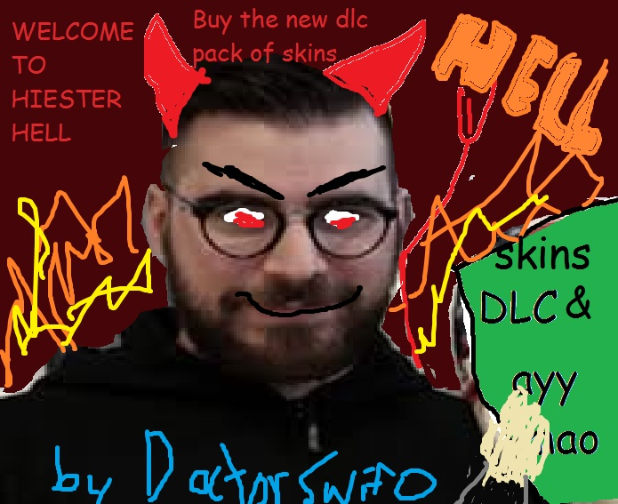

The Final Fuckening occured during crimefest 2015. Almir condemmed the Payday 2 community to their doom by the way of Microtransactions. He succumbed to the temptations of Gaben. Gaben had done this to many games before. Team Fortress 2 and Counter Strike: Global Offensive. As well as Rust, Unturned, and Dota 2. Almir saw the money they made without actually doing anything at all. They could make boatloads of cash without actually doing any work. He knew the impact this would make on the community, they would all hate it but clamor to buy them.
He used the community for their money. He knew he could make butloads of money without actually trying. He didn't have to add any actual content. No maps, no new weapons, no hiests, just stupid paint jobs. Yet this guarenteed Almir money without adding anything. The community would continue to spend and spend on the items. Their prices getting lesser and lesser each time. Until eventually they were worthless. And if they just let the community vote for the new skins, they would keep making them, without even having to make the new skins. Community members would keep making new skins.
Since the Final Fuckening began, Yung Lean's tightest Crew has reunited to bring tightness to Payday 2. This is Doctor Swifto, Yung Lean, Grumio the African Warlord, and Ye Olde Buttcheeks. Fighting Almir's evil army of microtransactions. And killing the skins. They are truly tight knights. Sacraficing themselves to restore tightness to the land of Payday 2. Since Crimefest 2015, things have never been the same. The Tightness of Payday 2 is draining with the sales of cheap gun skins. The only way to save it now is to add 1000 free hiests. That's the only way. If Almir does this, it will restore his place as a real human bean and a real hero. REALLLLLLLLLL HUMAN BEAN.......... AND A REAL HERO.
